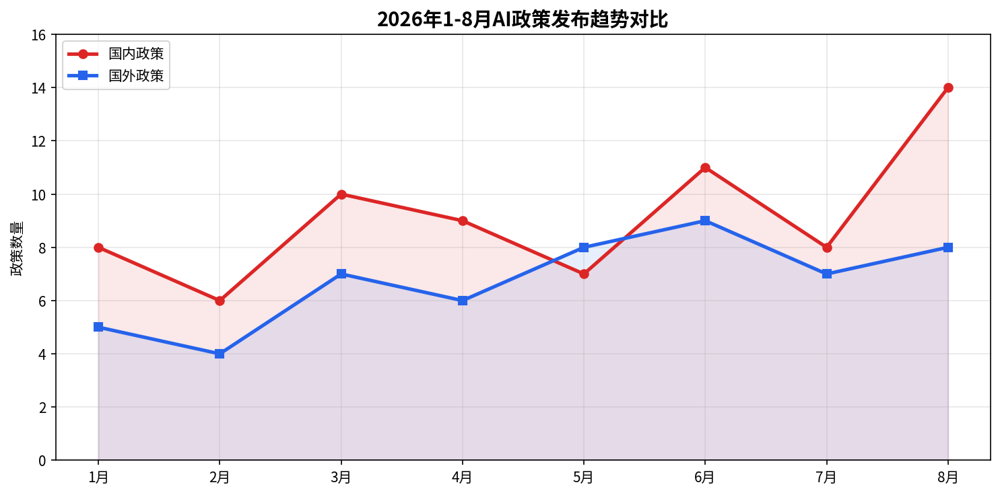
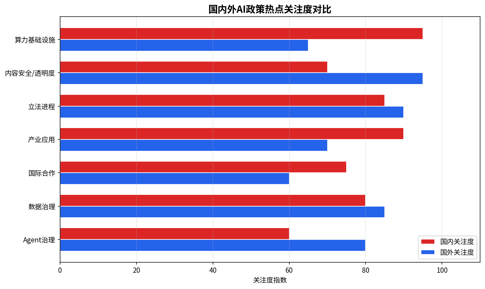
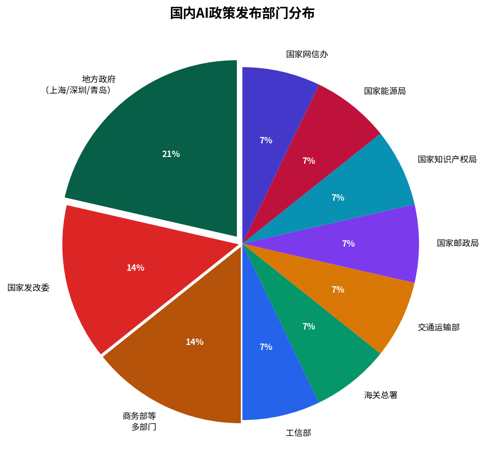
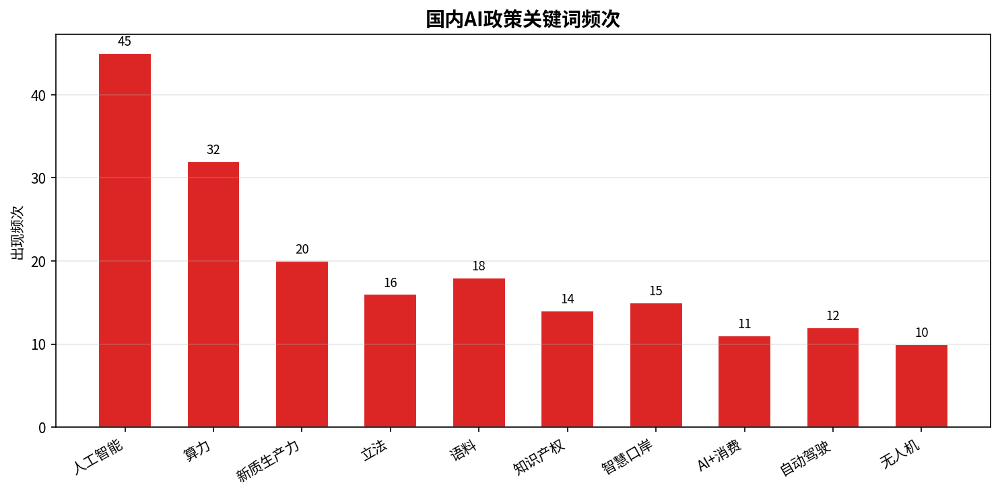
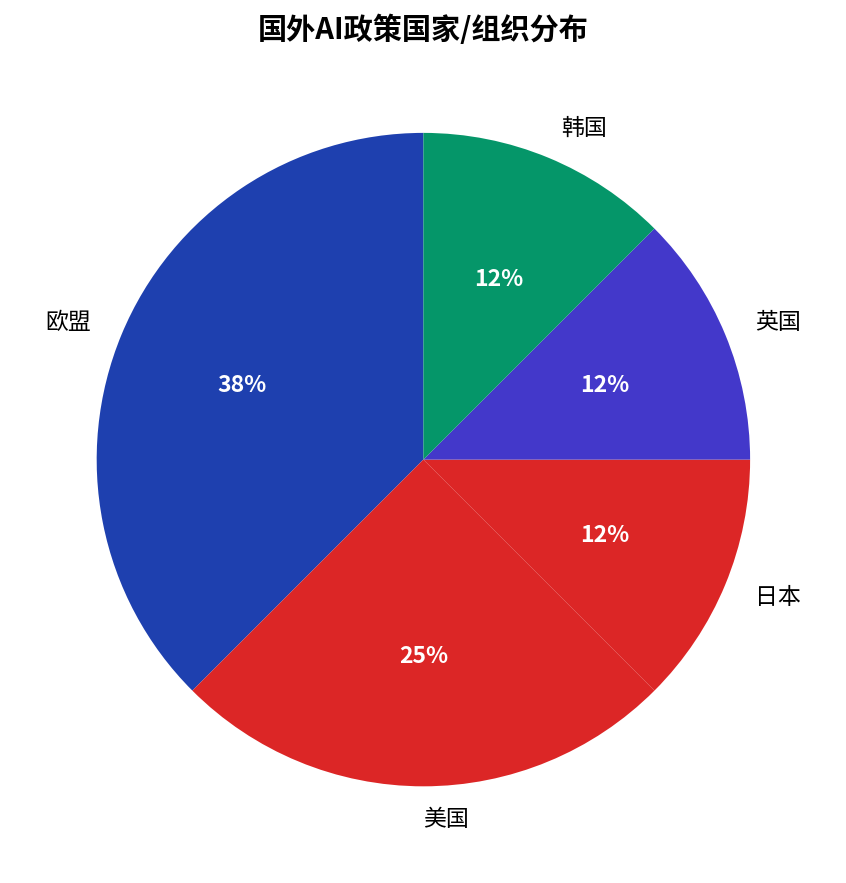
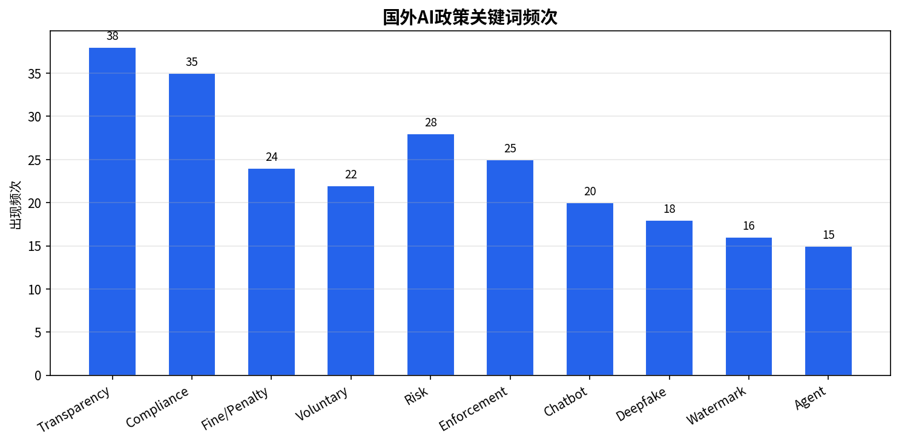
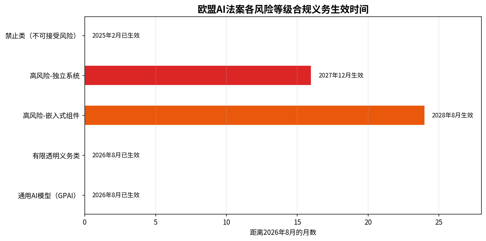

| 政策名称 | 发布单位 | 发布时间 | 政策要求摘要 | 监督/执行单位 | 政策类型 | 数据来源 |
|---|---|---|---|---|---|---|
| 关于加快建设人工智能发展和治理创新高地的意见 | 中共上海市委 | 2026-08-04 | 加快建设具有全球影响力的人工智能创新高地；坚持创新与治理并重；推动AI技术快速演进与规范发展 | 上海市委/市政府 | 地方政策 | 查看来源 |
| 生成式人工智能服务备案信息公告 | 国家网信办 | 2026-08-04 | 公布5-6月生成式AI服务备案信息；持续推动生成式AI服务备案；促进创新发展和规范应用 | 国家网信办 | 国家政策 | 查看来源 |
| 推动人工智能高质量发展工作部署 | 国家发改委 | 2026-08-01 | 六大举措：加快自主创新与基础研究；加快数据开放共享和AI语料建设；推动国家AI应用中试基地布局；推进"模芯云用"全链条协同；加快人工智能法立法进程；建立技术监测、风险预警、应急响应体系 | 国家发改委 | 国家政策 | 查看来源 |
| 合理布局算力资源四大方向 | 工信部 | 2026-08-01 | 点上发力：优化算力资源供给，推动智算集群建设和算电协同发展；链上创新：印发算力标准体系建设指南；网上升级：推动高速宽带网络建设；全面赋能：普惠算力赋能中小企业 | 工信部 | 国家政策 | 查看来源 |
| 43个重点口岸纳入智慧口岸建设工程 | 海关总署 | 2026-08-01 | 将43个重点口岸纳入"十五五"国家"智慧口岸建设工程"重点；推动"人工智能+"在口岸应用；推动智慧口岸与智慧海关、边检、海事融合发展；2030年实现口岸智能化 | 海关总署 | 国家政策 | 查看来源 |
| 出行智慧化与枢纽场站智能建设 | 交通运输部 | 2026-08-01 | 对都市圈环线、绕城高速等开展数智化升级改造；推进枢纽场站智慧停车引导、智慧寻车、智能泊车系统建设；推进"人工智能+交通运输"典型场景应用 | 交通运输部 | 国家政策 | 查看来源 |
| 邮政业发展"十五五"规划AI部署 | 国家邮政局 | 2026-08-01 | 大力拓展无人机运邮；鼓励建设无人机起降平台；普及智能终端和智能体；提高全程智能监控和调度水平 | 国家邮政局 | 国家政策 | 查看来源 |
| 知识产权与人工智能双向赋能 | 国家知识产权局 | 2026-08-01 | 修改《人工智能相关发明专利申请指引》；完善"人工智能+"具身智能、脑机接口等新兴产业专利审查标准；拓展AI大模型在知识产权领域应用场景；深度参与AI知识产权国际合作 | 国家知识产权局 | 国家政策 | 查看来源 |
| 能源领域人工智能应用推进 | 国家能源局 | 2026-08-01 | 提质增效：智能巡检、缺陷识别；破解难题：新能源大规模接入调度；智能运行：从辅助决策向自主执行跃升。"昆仑"大模型提升油气勘探效率10倍，"驭电"大模型辅助电网调度，"光明电力"大模型实现故障智能修复 | 国家能源局 | 国家政策 | 查看来源 |
| 关于加快"人工智能+消费"发展的实施意见 | 商务部等8部门 | 2026年 | 商务部、中央网信办、发改委、教育部、工信部、民政部、住建部、文旅部联合发布；推动AI在消费领域深度融合应用；商建发2026年第89号 | 商务部等8部门 | 国家政策 | 查看来源 |
| 上海市进一步推动"AI+制造"发展的若干措施 | 上海市政府 | 2026-07-17 | 13条举措涵盖关键核心技术攻关、推动工业智能体发展；加快AI与制造业深度融合 | 上海市经信委 | 地方政策 | 查看来源 |
| 2026年度人工智能"六个一批"培育工程 | 青岛市工信局 | 2026年 | 一批标志性新产品（具身智能机器人等）；一批示范性应用场景；一批领军型企业；一批创新平台；一批优秀人才团队；一批产业园区 | 青岛市工信局 | 地方政策 | 查看来源 |
| 深圳市人工智能语料券专项资金 | 深圳市政府 | 2026-06-11 | 语料采购资助和开放奖励；支持企业开展AI研发与应用；2026年9月1日启动报名 | 深圳市相关部门 | 地方政策 | 查看来源 |
| 深圳市AI和机器人产业45亿元补贴计划 | 深圳市政府 | 2026-08-04 | 发布专项支持政策，包括45亿元财政补贴，推动人工智能和机器人产业发展 | 深圳市相关部门 | 地方政策 | 查看来源 |


核心变化趋势：相比2025年国务院《关于深入实施"人工智能+"行动的意见》，本月政策呈现三大升级：
| 对比维度 | 前期政策（2025-2026上半年） | 本月最新政策（2026年8月） |
|---|---|---|
| 政策重心 | 侧重基础研发与产业布局 | 强调"人工智能+"全域落地，覆盖交通、能源、外贸、物流等全链条 |
| 立法进程 | 提出推进AI相关立法 | 发改委明确"加快人工智能法立法进程"，进入加速阶段 |
| 算力布局 | 统筹算力资源建设 | 提出"算电协同发展""城域毫秒用算"等精细化布局 |
| 监管模式 | 备案制管理 | 备案+专项行动整治（清朗·整治AI应用乱象）双管齐下 |
| 国际合作 | 参与国际规则讨论 | 明确提出"加快推动世界人工智能合作组织建设" |
| 地方配套 | 个别城市出台政策 | 上海、深圳、青岛等多地密集出台配套政策，形成协同效应 |
| 政策名称 | 发布国家/组织 | 生效/发布时间 | 政策要求摘要 | 监督/执法单位 | 政策类型 | 数据来源 |
|---|---|---|---|---|---|---|
| 《人工智能法案》核心条款生效（第三波） | 欧盟 | 2026-08-02 | 1. 聊天机器人必须明确告知用户正在与AI交互；2. AI生成内容必须携带机器可读标注；3. 深度伪造和公共利益内容必须清晰标识；4. 情绪识别和生物识别系统必须披露使用；5. AI办公室获得完整执法权，可要求预发布模型访问；6. 罚款最高3500万欧元或全球营收7% | 欧盟AI办公室 / 各成员国市场监管机构 | 法规 | 查看来源 |
| 《人工智能数字综合法案》调整落地节奏 | 欧盟理事会 | 2026-07-27批准 | 高风险独立系统合规义务延至2027年12月2日；嵌入式AI组件（医疗器械、工业机械等）延至2028年8月2日；非自愿亲密深度伪造禁令延至2026年12月2日 | 欧盟理事会 | 法规修订 | 查看来源 |
| AI透明度行为准则 | 欧盟AI委员会 | 2026-06-10定稿 | 为AI生成内容标记和标注提供详细技术指南；180+组织签署；签署方可凭此证明遵守第50条要求 | 欧盟AI办公室 | 自愿准则 | 查看来源 |
| 先进AI模型自愿性评估框架 | 美国白宫 | 2026-08-01完成 | 基于6月2日行政令；NSA负责建立分类基准测试流程评估AI模型网络能力；确定"覆盖前沿模型"阈值； Anthropic、谷歌、Meta、OpenAI参与审议 | NSA / 国家网络安全总监办公室 | 行政令 | 查看来源 |
| 《促进先进人工智能创新与安全》行政令 | 美国总统特朗普 | 2026-06-02签署 | 加强网络防御；建立联邦政府与AI开发商自愿合作框架；对前沿模型不设强制许可但保留评估机制；要求财政部、国防部、国土安全部等在8月1日前完成框架 | 白宫 / NSA / 财政部 / 国防部 | 行政令 | 查看来源 |
| AI基本计划修改草案 | 日本政府 | 2026-07-10 | 动态调整法律体系；依托高性能AI构建网络攻击防御体系；强化数字安全能力；《个人信息保护法》修正案大幅放宽AI数据使用限制 | 日本政府数字厅 | 国家战略 | 查看来源 |
| 英国AI监管立场声明 | 英国政府 | 2026年8月 | AI部长明确表示：若自愿安全测试无法提供充分保护，将准备立法引入具有约束力的AI监管；180+组织已签署自愿准则 | 英国AI监管办公室 | 政策声明 | 查看来源 |
| 韩国《AI基本法》持续执行 | 韩国政府 | 2026-01-22生效 | 具有约束力的EU式AI基本法；一年执法宽限期；风险分级监管框架 | 韩国科学ICT部 | 法律 | 查看来源 |



核心变化趋势：相比2025年，全球AI监管呈现从"原则导向"到"规则落地"的重大转变
| 对比维度 | 前期政策（2024-2025） | 本月最新动态（2026年8月） |
|---|---|---|
| 欧盟AI法案 | 法案通过，准备阶段 | 核心条款正式生效，进入主动执法阶段；AI办公室获得完整执法权 |
| 美国监管 | 拜登政府签署全面AI行政令 | 特朗普政府转向自愿框架+行业合作；撤销强制备案要求；强调网络安全评估 |
| 日本治理 | 软法治理，无惩罚措施 | 放宽数据限制以支持AI研发；构建网络攻击防御体系 |
| 英国立场 | 完全依赖自愿安全测试 | 首次明确表态：若自愿机制失效将转向法定监管 |
| 全球趋势 | 各国探索不同监管路径 | 全球分裂为两大阵营：欧盟式约束性监管 vs 美日英自愿/软法模式 |
| 企业合规 | 准备合规方案 | 面临实际执法风险；罚款最高可达全球营收7%；Agent治理成为新赛道 |